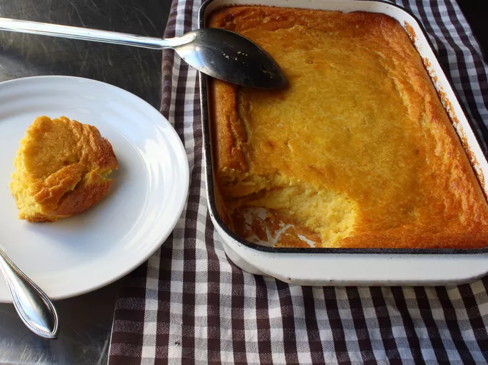
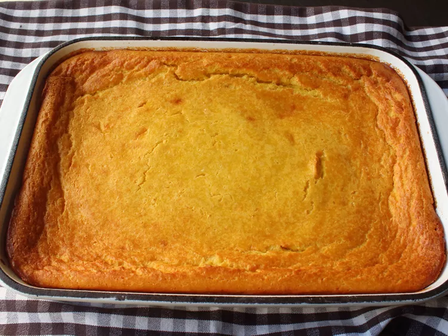

Chef John's Creamy Corn Pudding
Corn pudding doesn't get the same attention as some other holiday side dishes, but it's a real crowd-pleaser that pairs perfectly with all your favorite special-occasion meats.

| Prep Time: |
Cook Time: |
Total Time: |
| 10 mins |
1 hr |
1 hr 10 mins |
Ingredients
- 2 pounds frozen yellow corn, thawed and drained
- 3 tablespoons maple syrup
- 6 large eggs
- ½ cup milk
- 3 teaspoons kosher salt (cut in half if using fine salt)
- ¼ teaspoon cayenne pepper
- ¼ cup all-purpose flour
- 1 teaspoon baking powder
- 1 ½ cups heavy cream
- ½ cup melted butter, divided
Directions
Steps
- Preheat the oven to 350 degrees F (175 degrees C). Line a rimmed baking sheet with a silicone pad. Place an 8x11-inch baking dish on the pad.
- Place corn in a blender or food processor. Add maple syrup, eggs, milk, kosher salt, cayenne pepper, flour, and baking powder. Mix briefly with a spatula to push down the dry ingredients.
- Pulse mixture until it begins to come together. Then increase setting to high and blend until completely smooth, 2 or 3 minutes. Transfer mixture to a mixing bowl. Add heavy cream and 2/3 of the melted butter. Whisk to thoroughly blend.
- Grease the baking dish with the rest of the butter. Pour batter into the baking dish. Bake in the preheated oven on the baking sheet until the pudding is browned and set, between 60 and 75 minutes depending on the size and shape of your baking dish.

Chef's Notes
You can leave some of the corn kernels out of the blender and stir them into the batter to give the pudding some texture if you like.
The pan under the baking dish is optional; if you're in a hurry you can skip it, which will cut about 15 to 30 minutes off your cooking time. I like that it slows the cooking, which I think improves the texture.
I used an 8x11-inch baking dish, which is kind of an odd size. So if you use the more common 9x12-inch casserole, you'll have to test for doneness sooner as the batter will probably cook faster.